La Crèche vivante
Dimanche 13 décembre 2026
Séances à 16h, 17h et 18h · Cathédrale Saint-Jean-Baptiste, Bazas · Entrée gratuite
 Troubadours
Troubadours
Bazas · Sud-Gironde · Spectacle vivant
Une troupe entièrement bénévole qui fait vivre l'histoire du Bazadais : spectacles Son et Lumière, crèche vivante, soirées patrimoine et théâtre — depuis l'an 2000.
Prochain rendez-vous · Dimanche 13 décembre 2026 — La Crèche vivanteFondée en 2007 à Bazas, l'association des Troubadours du Troisième Millénaire est bien plus qu'une troupe de spectacle : c'est une communauté de passionnés, tous bénévoles, qui consacrent leur énergie à faire vivre la mémoire du Bazadais.
Figurants, techniciens, décorateurs, costumiers, musiciens : une équipe de 100 bénévoles qui, en endossant plusieurs rôles chacun, donne vie à plus de 700 personnages dans le spectacle Son et Lumière, avec chevaux, attelages et effets pyrotechniques.
« Une aventure humaine unique dans le Bazadais, portée par des bénévoles passionnés. »
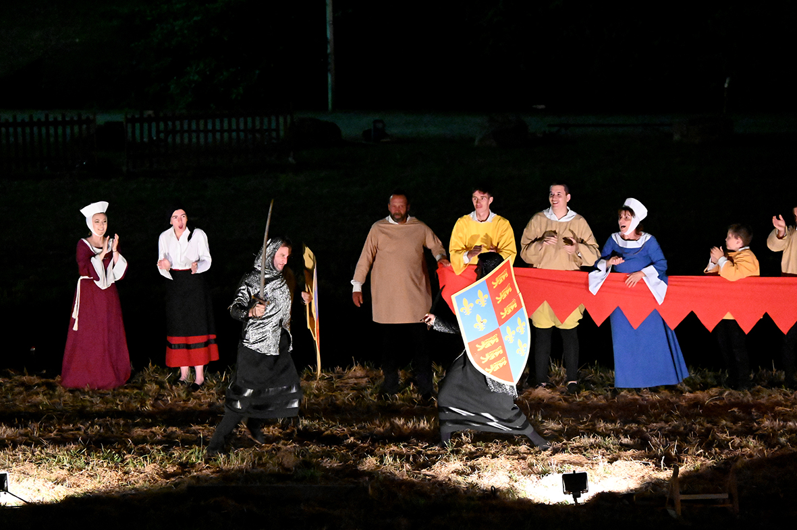
Dimanche 13 décembre 2026
Séances à 16h, 17h et 18h · Cathédrale Saint-Jean-Baptiste, Bazas · Entrée gratuite
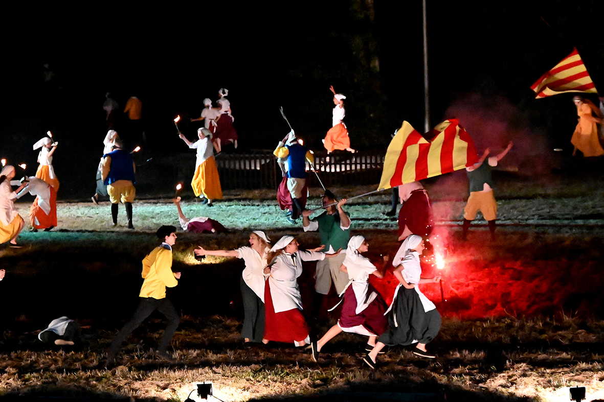
Spectacle phare · Son et Lumière2 500 ans d'histoire du Bazadais en 1h30. 100 bénévoles, plus de 700 personnages, chevaux et attelages.
Découvrir → Spectacle de Noël
Spectacle de NoëlUne nativité grandeur nature dans la cathédrale de Bazas : acteurs, animaux vivants et décors somptueux.
Découvrir →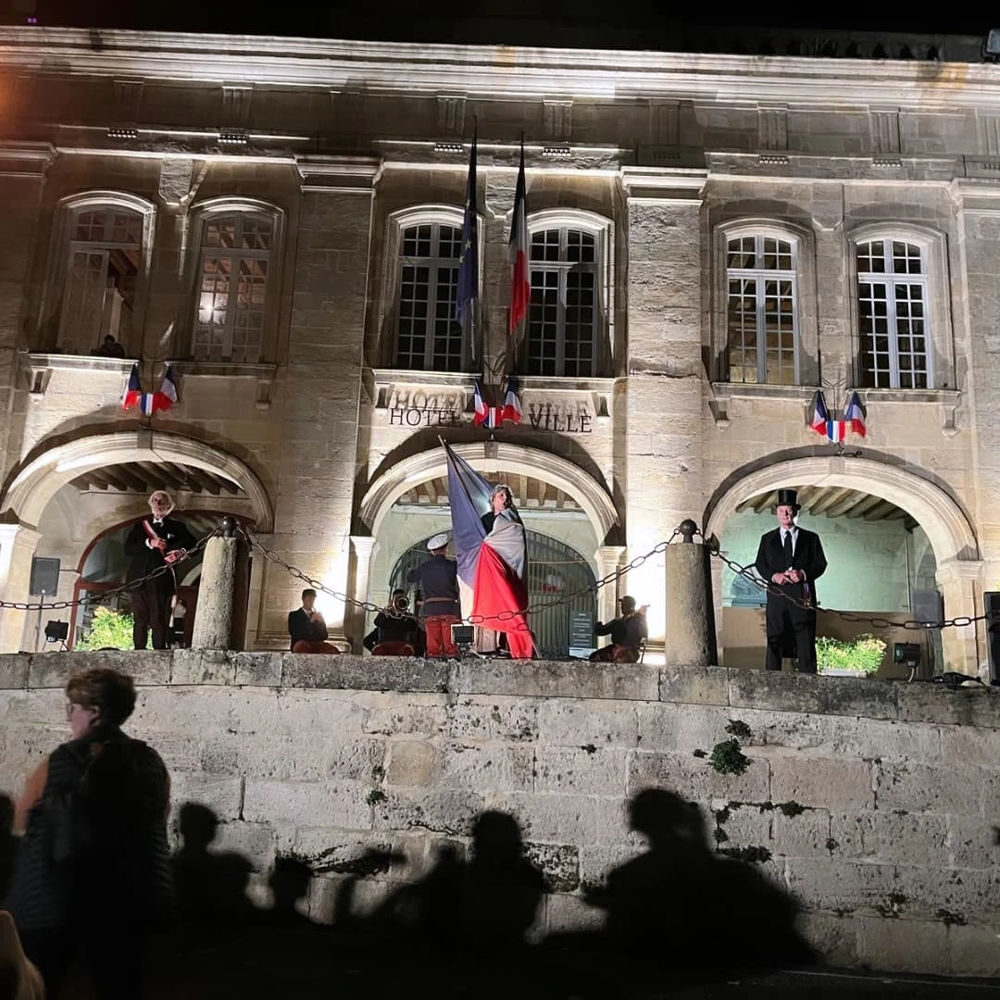
Événement patrimonialUne déambulation nocturne et des scénettes jouées pour redécouvrir le patrimoine du Bazadais.
Découvrir → Théâtre amateur
Théâtre amateurUne vingtaine de comédiens bénévoles, des créations originales et une entrée au chapeau.
Découvrir →Un groupe d'amis passionnés crée les premiers spectacles à Bazas.
Création officielle de l'association loi 1901.
100 bénévoles, plus de 700 personnages, une fresque de 2 500 ans d'histoire.
Trois soirées exceptionnelles en août pour célébrer cet anniversaire.
Quatre créations, une seule passion : faire vivre l'histoire et la magie du Bazadais à travers le spectacle vivant.

Le grand spectacle historique de la troupe. Sur le site de la Brèche à Bazas, 100 bénévoles incarnent plus de 700 personnages et font revivre 2 500 ans d'histoire du Bazadais à travers une fresque nocturne inoubliable.
De la conquête romaine à 1942, en passant par Richard Cœur de Lion, Catherine de Médicis et Louis XIV : chaque époque prend vie dans un mélange de lumières, de musiques et de costumes d'époque. En août 2026, le spectacle a fêté son 10e anniversaire.
Chaque année à l'approche des fêtes, les Troubadours proposent une Crèche Vivante hors du commun dans la cathédrale de Bazas : une nativité grandeur nature avec acteurs, animaux et décors soigneusement reconstitués.
Un moment de magie et de partage, accessible à tous les publics, qui plonge les familles dans l'ambiance de la Bethléem d'antan.

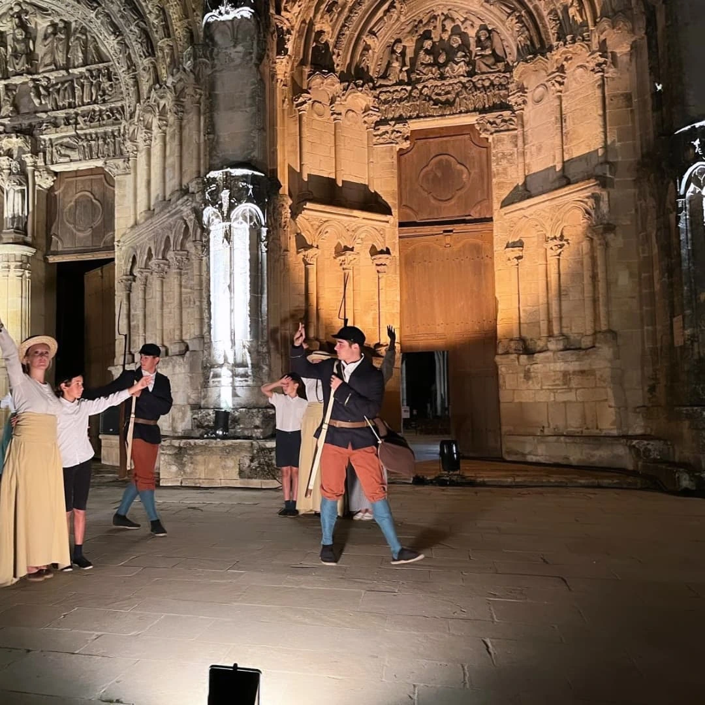
Chaque automne, les Troubadours proposent une soirée événementielle qui met en lumière le riche patrimoine du Bazadais, dans un lieu différent d'une édition à l'autre.
Déambulation nocturne, scénettes historiques et éclairages : une manière unique de découvrir les trésors de la région.
Née au sein des Troubadours, l'Atelier Théâtre rassemble une vingtaine de comédiens amateurs qui créent, écrivent et jouent chaque année de nouvelles pièces, sketches et saynètes.
Ouvert à tous, c'est un espace de création collective, de partage et de dépassement de soi.
2 500 ans d'histoire du Bazadais en 1h30 : 100 bénévoles, plus de 700 personnages, des chevaux et des attelages.

Août 1914. La France appelle ses enfants pour défendre la mère patrie. Pour Jean, enfant du pays, meunier du moulin de la Glory, c'est l'heure du départ.
Au soir des adieux avec sa mère, cette femme de la terre, raconteuse d'histoires… l'instant est aux souvenirs. « Raconte-moi, une dernière fois, l'histoire de ma cité, de mon pays : le Bazadais. »
Richard Cœur de Lion, Catherine de Médicis, Louis XIV composeront entre autres ce voyage dans le temps. Accompagnez-les dans cette quête, entre croisades et guerres de religions, moissons et fêtes des corporations.
« Jean, souviens-toi et regarde… »
Les prochaines dates seront publiées ici et sur nos réseaux sociaux.
La réservation se fait en ligne via HelloAsso (paiement sécurisé, billet envoyé par e-mail). Le lien sera publié ici dès l'ouverture de la billetterie.

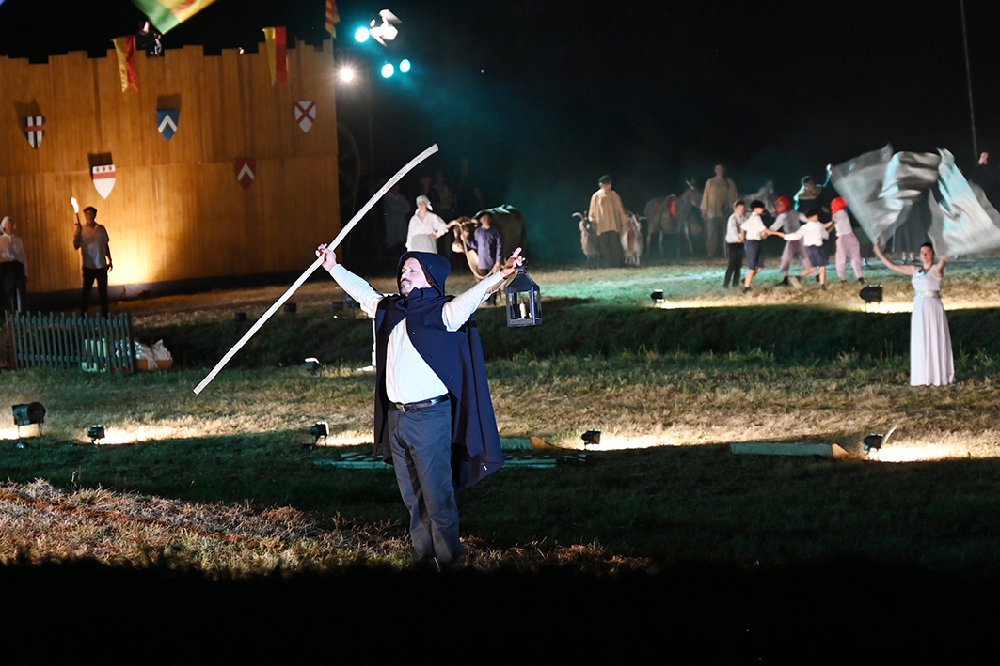
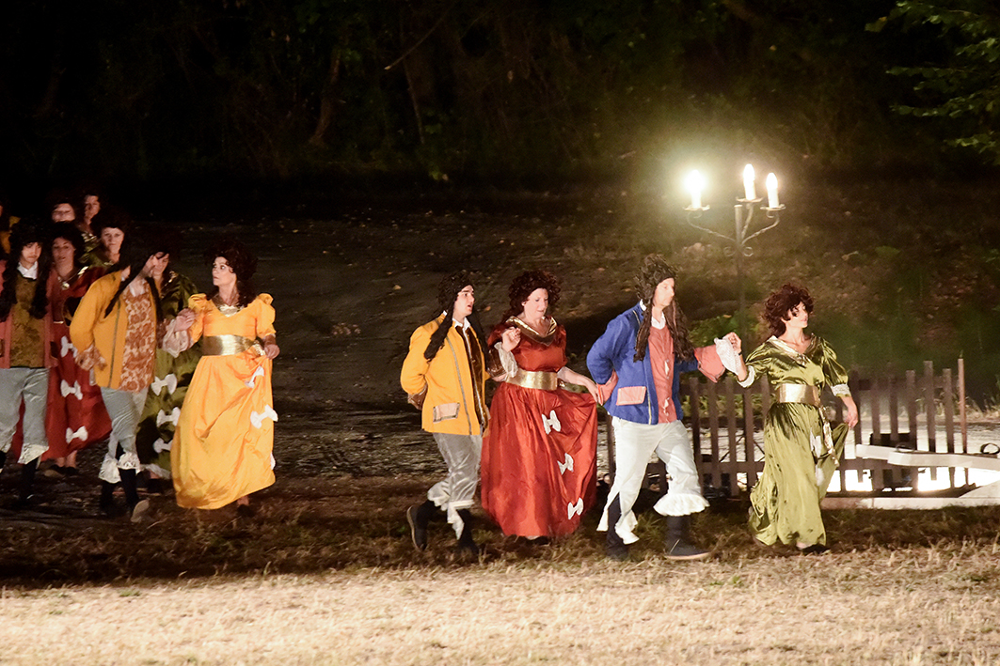
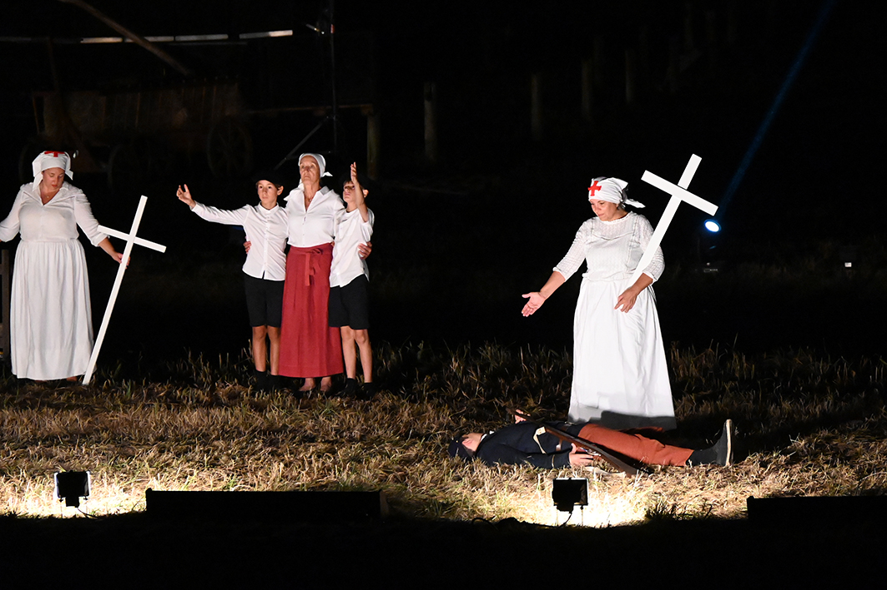
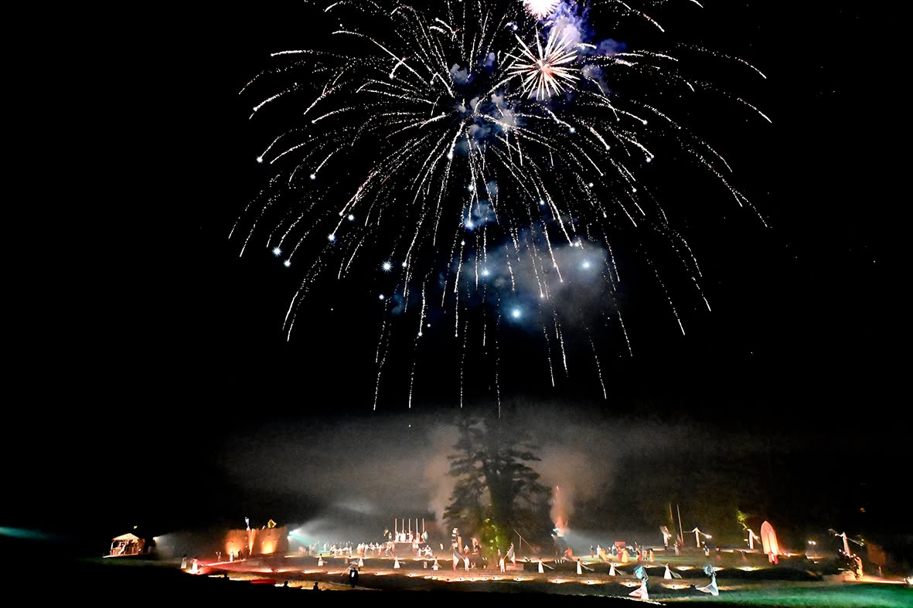


Le spectacle est maintenu même en cas de pluie. Pensez simplement à prévoir une tenue adaptée à la météo du soir.
C'est fortement conseillé : les places partent vite. La réservation se fait en ligne via HelloAsso, paiement sécurisé, billet envoyé par e-mail.
Il n'y a pas de parking dédié, mais plusieurs parkings sont disponibles à proximité du site de la Brèche.
Oui, des emplacements PMR sont prévus et le site de la Brèche est accessible aux personnes à mobilité réduite.
Le spectacle se déroule en soirée et en extérieur : prévoyez une tenue adaptée à la fraîcheur nocturne, même en plein été.
Oui, en famille, tous âges sont les bienvenus. L'entrée est gratuite pour les moins de 5 ans. Le spectacle débute à 22h et dure 1h30 (fin vers 23h30) : un horaire tardif à prendre en compte pour les tout-petits.
Non, les photos et vidéos ne sont pas autorisées pendant la représentation, afin de préserver la magie du spectacle et de ne pas gêner les comédiens ni les autres spectateurs.
Non, les animaux ne sont pas admis sur le site. Le placement est libre sur le théâtre de verdure : vous pouvez apporter couverture ou chaise pliante.
Une nativité grandeur nature dans la majestueuse cathédrale de Bazas — animaux vivants, costumes d'époque et mise en scène féerique pour toute la famille.
Depuis 2008, les Troubadours du Troisième Millénaire font revivre chaque année la naissance de l'Enfant Roi dans l'écrin de la cathédrale Saint-Jean-Baptiste de Bazas.
Organisée lors du marché de Noël de Bazas, cette évocation poétique et féerique enchante chaque année un public de plus en plus nombreux. Animaux vivants, acteurs en costumes d'époque et décors soignés plongent les familles dans l'ambiance de la Bethléem d'antan.
Ce spectacle peut également être joué dans d'autres collectivités ou structures, à la demande.
« Une évocation poétique et féerique de la naissance de l'Enfant Roi dans une cathédrale qui flamboie. »
Trois séances le même jour — choisissez la vôtre, sans réservation
Séances à 16h, 17h et 18h
Cathédrale Saint-Jean-Baptiste, Bazas
Entrée gratuite · sans réservation
Dans le cadre du marché de Noël de Bazas · Cathédrale Saint-Jean-Baptiste
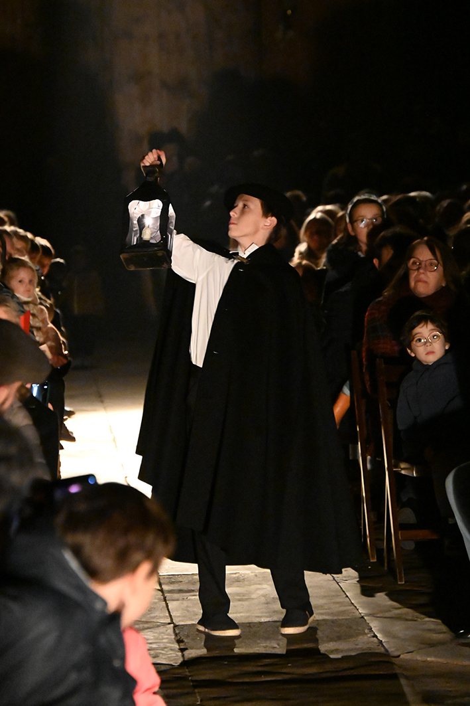
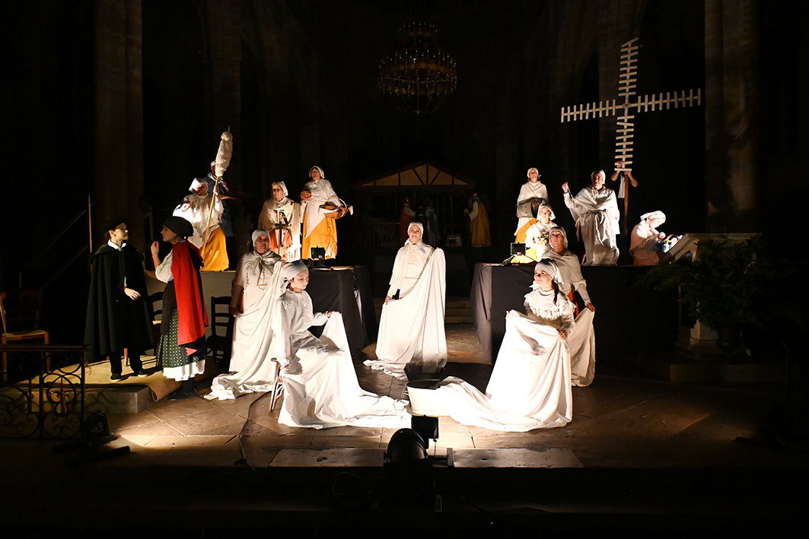

Non, il n'y a pas de réservation. Il suffit de se présenter à l'heure de la séance choisie devant les portes de la cathédrale : une fois celles-ci ouvertes, prenez place à l'intérieur pour profiter du spectacle.
Oui, la cathédrale de Bazas est accessible aux personnes à mobilité réduite. N'hésitez pas à nous contacter avant votre venue pour toute question spécifique.
Tout à fait, c'est un spectacle familial pensé pour petits et grands, d'une durée d'environ 40 minutes.
Oui, les photos sont autorisées. Merci de désactiver le flash pour ne pas gêner les figurants ni les autres spectateurs.
Un moment de partage unique, accessible à tous, qui plonge familles et enfants dans l'ambiance féerique de la Bethléem d'antan.
Partez à la découverte des pierres et des mémoires du Bazadais — un parcours nocturne ponctué de scénettes jouées au fil des siècles.
Chaque année, les Troubadours du Troisième Millénaire vous convient à une déambulation nocturne dans un lieu patrimonial du Bazadais. Au détour d'une allée, d'une cour ou d'un parvis, des comédiens en costumes d'époque ressuscitent les grandes heures du site.
Ce n'est pas un spectacle assis — c'est une expérience vivante, un voyage dans le temps où le passé surgit là où on ne l'attend pas. Chaque étape du parcours révèle un fragment d'histoire, joué avec passion par la troupe bénévole.
La dernière édition, le 19 septembre 2026, s'est déroulée au château de Cazeneuve à Préchac, cadre grandiose pour une nuit hors du temps.
« Quand les pierres reprennent vie et que l'histoire chuchote à chaque carrefour. »
Les prochaines dates seront publiées ici et sur nos réseaux sociaux.
De la première scénette jusqu'au dénouement final
Le public se réunit à l'entrée du lieu de la soirée. L'atmosphère nocturne s'installe, les flambeaux s'allument et le voyage dans le temps peut commencer.
Au fil du parcours, des comédiens en costumes d'époque surgissent et jouent des scènes tirées de l'histoire du Bazadais — intrigues de cour, scènes de vie médiévale, personnages légendaires.
Entre chaque scénette, le groupe avance dans le cadre majestueux du site, guidé par les récits des Troubadours. Chaque pas est une page d'histoire tournée.
Le parcours s'achève dans une mise en scène finale, moment fort qui rassemble toute la troupe et clôt cette nuit hors du commun dans un élan de partage et d'émotion.
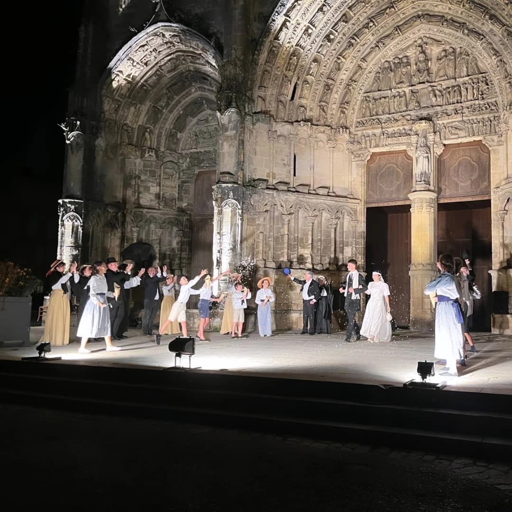

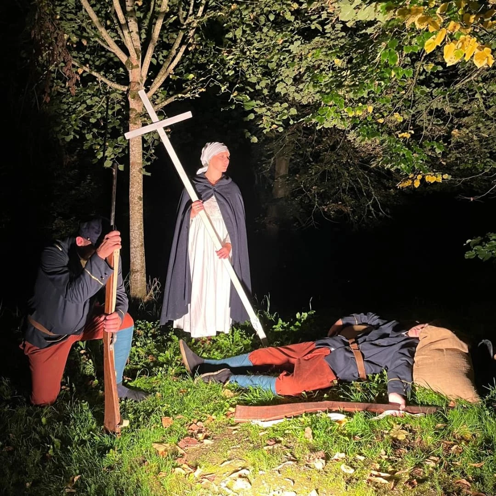
Non, l'entrée est libre et gratuite, sans réservation, dans la limite des places disponibles le long du parcours.
La durée varie d'une édition à l'autre selon le nombre de scénettes et le rythme du groupe. Prévoyez votre soirée sans contrainte horaire stricte, et suivez le parcours à votre rythme.
Le parcours se fait à pied et les sols peuvent être irréguliers selon le lieu. Prévoyez des chaussures confortables ; contactez-nous avant votre venue si vous avez des questions sur l'accessibilité.
La soirée se déroule en extérieur. En cas de fortes intempéries, elle peut être annulée ; l'information sera alors communiquée sur nos réseaux avant le début du parcours.
Oui, c'est une sortie familiale appréciée de tous les âges. Comptez simplement sur l'endurance des plus petits pour la durée du parcours.
Suivez-nous sur Facebook et Instagram pour connaître la prochaine soirée. Entrée libre, venez nombreux.
Née au sein des Troubadours du Troisième Millénaire, cette troupe de comédiens bénévoles crée, joue et fait vivre le théâtre à Bazas — des planches du Chemin des Mémoires aux scènes de la Salle des Conférences.
Fondé en 2010 sous la direction d'André Desmoulins, l'Atelier Théâtre des Troubadours rassemble une vingtaine de comédiens amateurs animés par une même passion : donner vie à des histoires sur scène.
La troupe propose chaque année des créations originales — pièces de théâtre, sketches, saynètes — jouées en salle ou intégrées aux grands spectacles de l'association. Elle participe notamment aux soirées du Chemin des Mémoires, apportant sa touche théâtrale au cœur du spectacle Son et Lumière.
Ouvert à tous, l'atelier est bien plus qu'une troupe : c'est un espace de création collective, de partage et de dépassement de soi, où chacun trouve sa place sur les planches.
« Le théâtre, c'est l'art de faire croire que la vie est plus belle, plus drôle ou plus émouvante qu'elle ne l'est vraiment. »
Les représentations sont annoncées sur nos réseaux sociaux.
Chaque spectacle est une œuvre nouvelle, écrite et mise en scène pour les Troubadours. Pas de pièces toutes faites — seulement de l'inédit.
Comédiens, techniciens, costumiers — tous bénévoles, tous passionnés. L'atelier vit grâce à l'énergie de ceux qui y croient.
Des spectacles accessibles, une entrée au chapeau, des salles ouvertes à tous. Le théâtre ne doit pas avoir de barrière.
Faites défiler pour explorer


Il n'y a pas de tarif fixe : vous participez librement, à la fin de la représentation, selon vos moyens et votre plaisir. C'est le principe pour toutes les représentations de l'Atelier Théâtre, et c'est ce qui permet aux spectacles de rester accessibles à tous.
Il n'y a pas de réservation. Pour les représentations en salle, il est conseillé d'arriver un peu en avance, les places étant généralement libres et limitées à la capacité de la salle.
Cela dépend des créations de la saison : certaines pièces conviennent à toute la famille, d'autres s'adressent à un public plus adulte. N'hésitez pas à nous contacter pour connaître le public conseillé de la prochaine représentation.
Sans condition d'expérience : l'atelier accueille toute personne motivée, quel que soit son âge ou son niveau. Passez par le formulaire de contact pour être recontacté avant la reprise des ateliers.
Vous rêvez de théâtre ? L'Atelier est ouvert à tous, sans condition. Venez vivre l'aventure de la scène au sein d'une troupe chaleureuse et passionnée.
Les prochains rendez-vous de la troupe, et comment réserver vos places.
Dimanche 13 décembre 2026
Séances à 16h, 17h et 18h · Cathédrale Saint-Jean-Baptiste, Bazas · Entrée gratuite
Réservation en ligne sur HelloAsso, paiement sécurisé, billet envoyé par e-mail. Le lien est publié sur la page du spectacle dès l'ouverture de la billetterie.
Tarifs de l'édition 2026, à titre indicatif. Billet non échangeable et non remboursable.
Pour une réservation de groupe, une question ou une demande particulière, écrivez-nous via le formulaire de contact.
Depuis l'an 2000, des femmes et des hommes bénévoles font vivre l'histoire du Bazadais à travers des spectacles vivants inoubliables.
Les piliers d'une longue aventure collective, née de la passion pour l'histoire et le spectacle vivant dans le Bazadais.
Un groupe d'amis passionnés décide de faire revivre l'histoire de son terroir. C'est le début d'une longue aventure humaine et artistique.
Création officielle de l'association « Troubadours du Troisième Millénaire », association loi 1901, dont la vocation est de produire et de réaliser des spectacles vivants de type Son et Lumière, mobilisant volontaires et bénévoles.
Première Crèche vivante dans la cathédrale Saint-Jean-Baptiste de Bazas, à l'occasion du marché de Noël. Elle revient depuis chaque année.
Naissance de l'Atelier Théâtre, sous la direction d'André Desmoulins, qui rassemble aujourd'hui une vingtaine de comédiens bénévoles.
Naissance du grand spectacle historique de la troupe : 100 bénévoles qui incarnent plus de 700 personnages, des chevaux et attelages, une mise en scène somptueuse sur le site de la Brèche à Bazas. De la conquête romaine à 1942, une fresque de 2 500 ans d'histoire.
Pour la dixième saison du Chemin des Mémoires, les Troubadours ont célébré une décennie d'émerveillement partagé lors de trois soirées exceptionnelles, les 7, 8 et 9 août 2026, sur le site de la Brèche.
Les Troubadours du Troisième Millénaire sont une troupe entièrement bénévole. Qu'il s'agisse d'être figurant, technicien, décorateur ou costumier — toutes les bonnes volontés sont les bienvenues.
Une question, une envie de rejoindre la troupe ou d'organiser un événement ? Nous vous répondons avec plaisir.